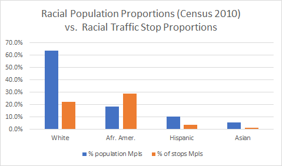
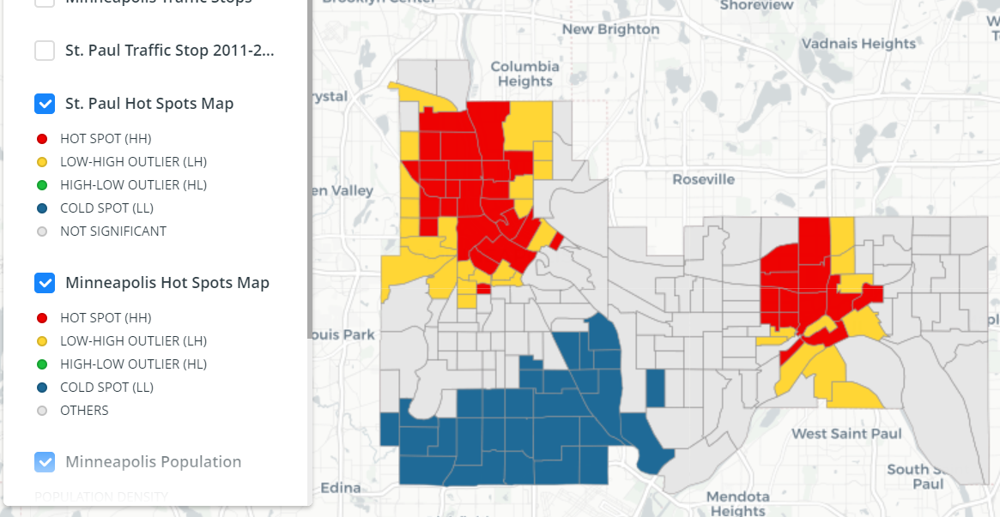

This project utilized the data and their analysis results to develop a clear and interactive mapping interface to encourage public engagement with and understanding of the data.
Step 1. Data extraction & cleaning: The police traffic stop data available from both Minneapolis and Saint Paul police departments are available on the OpenData portal.
Step 2. Data analysis: Statistical summary focused on conventional proportional calculation, with the outputs of the Stanford Open Policing Project serving as guides. Spatial analysis used Moran's I to identify the clusters and outliers of the traffic stops.
Step 3. Web map development: Carto was used as the platform for our web map. The final map can display the points representing the traffic stops in the Twin cities, the hot spot maps, the statistical summary, and the demographic information of each census tract.
View the web mapStatistical summary results:
Spatial analysis results:
